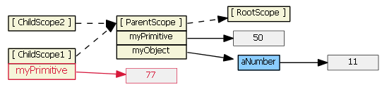
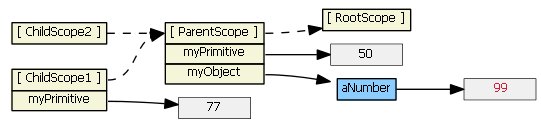

Angular
This all is important if you want to understand scopes in Angular.
From https://github.com/angular/angular.js/wiki/Understanding-Scopes
Suppose we have in our controller:
$scope.myPrimitive = 50;
$scope.myObject = {aNumber: 11};
And in our HTML:
<script type="text/ng-template" id="/tpl1.html">
<input ng-model="myPrimitive">
</script>
<div ng-include src="'/tpl1.html'"></div>
<script type="text/ng-template" id="/tpl2.html">
<input ng-model="myObject.aNumber">
</script>
<div ng-include src="'/tpl2.html'"></div>
Each ng-include generates a new child scope, which prototypically inherits from the parent scope.ng-include.

What do you think will happen if you type "77" into the first input field? Well, it's basically like doing:
ChildScope1.myPrimitive = 77;
What should happen then?
Well, since we're setting, we don't look up the prototype chain, and we just add a myPrimitive property to ChildScope1 with a value of 77.

Ok, so what about if we type in "99" to the second input field? That's basically like doing:
ChildScope2.myObject.aNumber = 99;
What should happen then?
Well, this is analogous to doing the following:
var temp = ChildScope2.myObject;temp.aNumber = 99;
The first part involves getting, and thus looking up the prototype chain is allowable. ChildScope2 starts off by looking for myObject on itself, and it doesn't find it. So it then proceeds to loo up the prototype chain, and finds myObject on ParentScope. Essentially, temp becomes ParentScope.myObject.
Then, ParentScope.myObject just has its aNumber property overwritten with 99.
